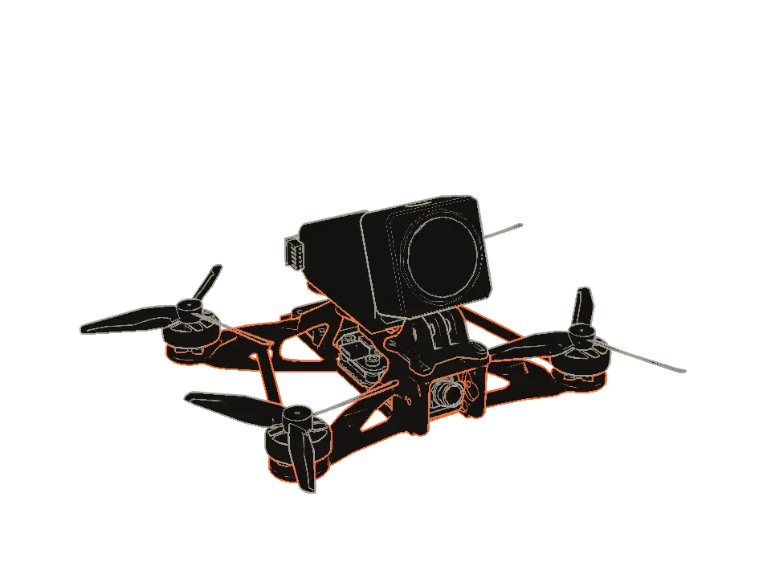

Dominic Tataj Software, autonomy and systems · MEng, UCL
- Looking for
- Summer 2027 internship or 2027–28 placement year
- Available
- From 27 June 2027
- Right to work
- Full right to work in the UK
- Based
- London
- Degree
- Graduating 2029, predicted 2:1
Second-year MEng Mechanical Engineering student at UCL, looking for software, autonomy and systems roles, particularly in UK defence.
- E-04A simulated racing drone that finds gates by camera, with no GPS or map, passes 98.6% of them with clutter, over 300 courses.
- E-03A generatively designed frame keeps the whole drone at 246 g, under the CAA's 250 g, and is 36% lighter.
- E-02A pipe-climbing robot, its drivetrain picked by my model, climbed the 2 m pipe at the IMechE Design Challenge.
Projects
-
E-04
Vision-based autonomous drone racing
Aug–Oct 2026 · In development
- Problem
- Fly a simulated racing drone through gates by camera, with no GPS, depth sensor or map of the gate positions.
- Role
- Solo; set the design and test rules, directed an AI coding agent.
- Tools
- Python · OpenCV · NumPy
- Outcome
- 99.8% of gates in a clean world, 98.6% with clutter.
-
E-03
Generative FPV drone frame
Jul–Sep 2026 · Built and tested
- Problem
- A 3-inch FPV frame light enough to keep the complete drone under 250 g.
- Role
- Design, analysis and build.
- Tools
- Fusion generative · Ansys Mechanical
- Outcome
- A 38 g frame, 36% lighter than a plate frame; 246 g all-up.
-
E-02
Pipe-climbing robot
Feb–Apr 2026 · IMechE Design Challenge
- Problem
- Climb a 2 m pipe dragging a chain, inside 400 × 300 mm, on £50, within 3 minutes.
- Role
- Team of 6; I built the team's Excel model of the drivetrain and worked on the CAD.
- Tools
- Excel · Fusion CAD
- Outcome
- The model picked the setup from 20+ simulated, cutting real climb time by 16%. The robot completed the climb.
-
E-01
AI training-power scaling analysis
Oct 2025 · Complete
- Problem
- How AI training power scales with model size, and what a frontier model draws.
- Role
- Analysis and report.
- Tools
- MATLAB
- Outcome
- P ∝ N0.55 across 358 models; GPT-5 estimated at about 590 kW.
About
I'm heading towards software, autonomy and systems; my latest project is a racing drone's flight stack, from gate detection to a Kalman filter. Mechanical design is my other strength.
| Skill or role | Projects |
|---|---|
| Software and autonomy | |
| Python: NumPy, pandas, OpenCV, Matplotlib | E-04 |
| Autonomy architecture: detection, pose, filtering and guidance as separate stagescode written with an AI agent | E-04 |
| Test design: seeded regression benchmarks, flagged A/B changes, pooled acceptance | E-04 |
| MATLAB: statistics and curve fitting | E-01 |
| Mechanical design | |
| Fusion: generative design, CAD | E-03 E-02 |
| Ansys Mechanical FEA | E-03 |
| Dynamic modelling in Excel | E-02 |
| Education | |
| MEng Mechanical Engineering, UCL2025–2029 · predicted 2:1 | |
| IB Diploma, 42/45HL Mathematics, Physics, Economics | |
| Leadership | |
| NASA Space Center University, Houston, 2024Led a 4-person team designing a Mars habitat; 3rd of 20 teams | |
| Experience | |
| Lifeguard, Virgin Active2025–present | |
| Stock photo contributor, Unsplash2024–present | |
| Languages | |
| German and Spanish (intermediate), Mandarin (beginner) | |
Outside engineering
I fly FPV drones, boulder and photograph landscapes and cities.
- Views
- 390,000+
- Downloads
- 5,000+
Photography
See the photographs →Contact
Open to a summer 2027 internship or 2027–28 placement.